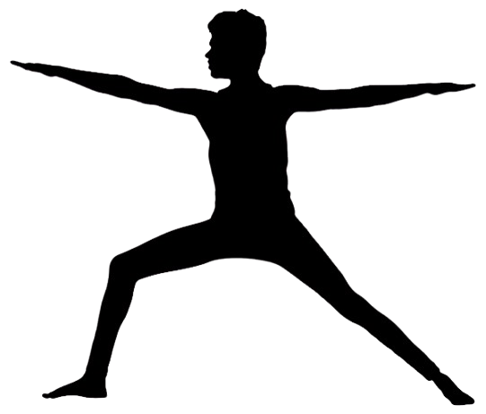

0.0s
Namaste 🙏 Posisikan diri Anda 2 sampai 3 meter di depan kamera untuk memulai sesi.
Ruang latihan yoga interaktif berstandar tinggi dengan koreksi postur berbasis AI.

Namaste 🙏 Posisikan diri Anda 2 sampai 3 meter di depan kamera untuk memulai sesi.